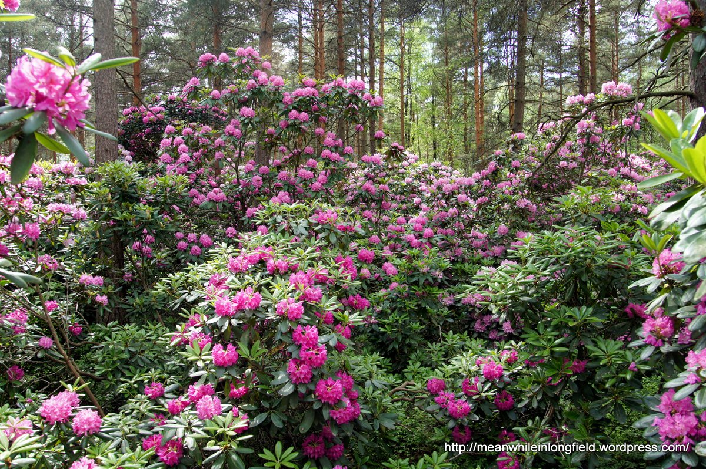
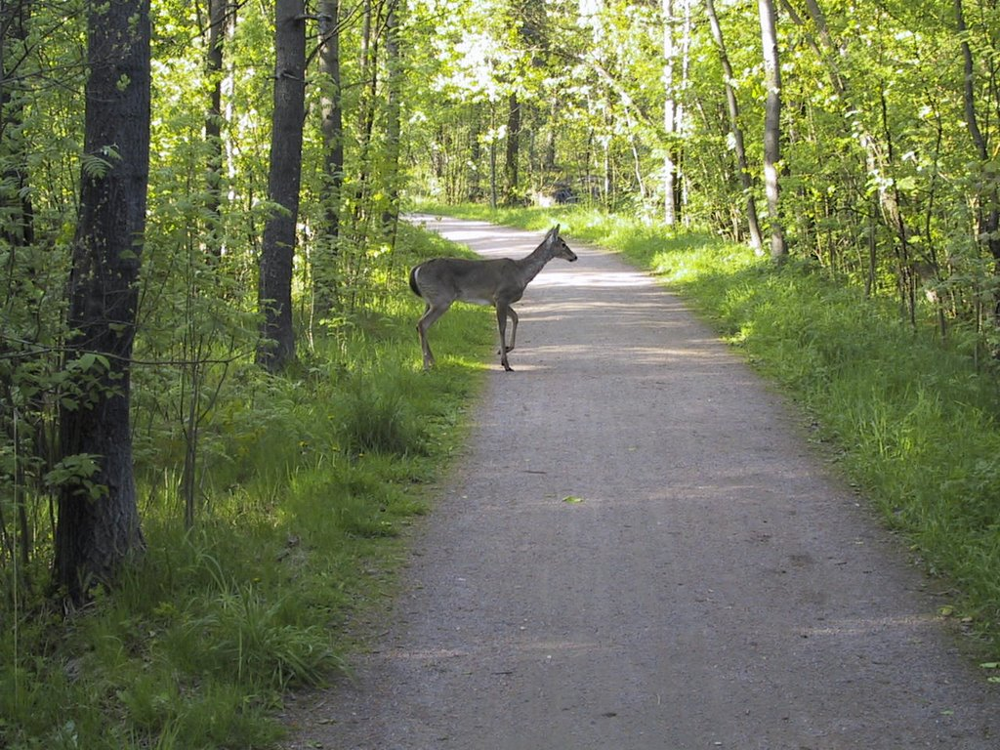
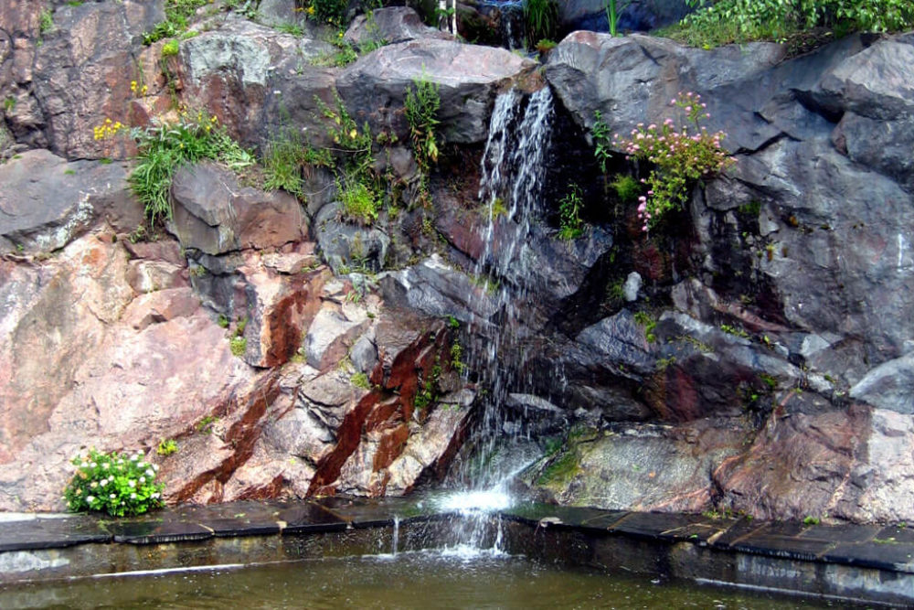
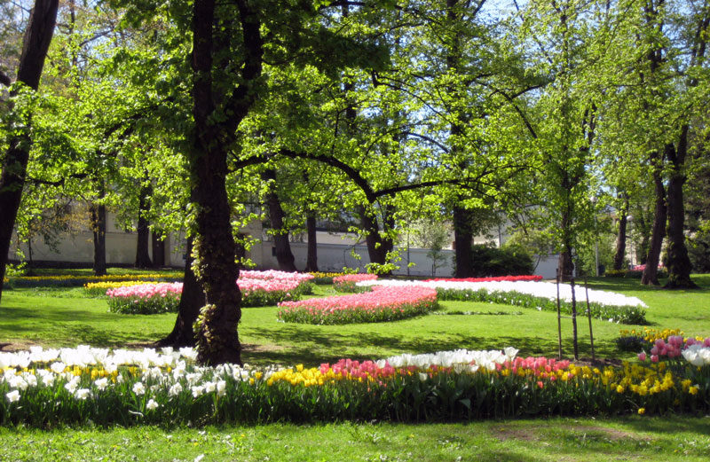
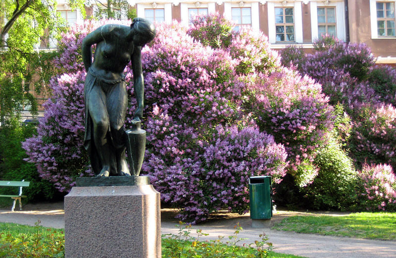
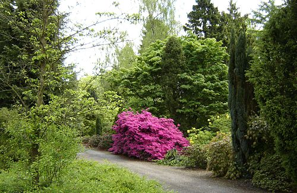

Parks
Alpine Rose Park
"The Haga Alpine Rose Park, also known as the Rhodes Park, is a unique gem of Helsinki The park is at the same time a park open to the public and a university plant breeding experiment."
See here for more!Central Park
"The Central Park is a wooded area of almost ten kilometers in the north-south direction a green area that starts at the valley near the center and ends at the northern border of Helsinki Haltiala and Vantaanjoki."
See here for more!Cliffs of Josafat
"The spectacular cliffs of Josafat between Helsinginkatu and Josafatinkatu are the framework for this sunbathing and picnic park, which is popular with the Rockies. It forms the Tauno Palo Park with green space."
See here for more!Observatory Hill
"The Observatory Hill or the Observatory Tower is a rocky hill about 30 meters high in Ullanlinna Next to the South Harbor. The hill is for the most part a park, but there is also located some buildings, such as the Helsinki Observatory, completed in 1834."
See here for more!Tove Jansson Park
"Planting work on the Katajanokanpuisto park began in 1897 with Svante Olsson, a city gardener drawings. In August 2014, the name of the park was changed to Tove Jansson Park when 100 years had passed since the artist was born."
See here for more!Viikin Arboterum
"Viikki Arboretum, a tree species park, was founded in 1969 mainly by Dendrologian, ie for the study and teaching of tree genres. At the same time, it is part of the city's very popular outdoor and recreational area of the Old Town Bay."
See here for more!